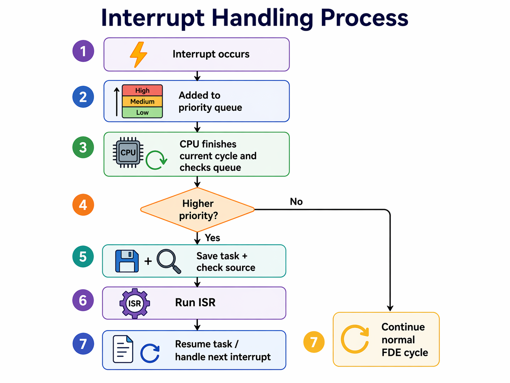

4.1 Hardware and Software
Computer Science IGCSE notes, prepared by Dr. Hamdeni
4.1a: Difference between system software and application software
- Software is a set of instructions that tells a computer what to do and allows the user to do useful tasks on devices such as PCs, laptops, tablets, or mobile phones.
- Without software, the hardware itself cannot do anything meaningful.
- System software manages the running of hardware and other software.
- It allows communication between these components.
- It provides a platform on which other software can run.
- It helps hardware and software work properly together and maintains efficiency.
- System software helps the computer run, while application software helps the user perform tasks.
- Utility programs carry out maintenance tasks such as virus checking, backups, disk repair, file compression, and security management.
- System clean-up searches for and removes unused programs and data.
- Defragmentation rearranges files so that they are stored contiguously and the free spaces are located together.
-
Typical examples of application software include generic software names. Application software may also have brand names:
- Word processors create and edit text documents, allowing tools like formatting, spell checking, and importing images.
- Spreadsheets organize numerical data into rows and columns, performing calculations using formulas and providing graphs.
- Databases store and analyze data using tables, allowing users to query, modify, and report on the data.
- Web browsers retrieve, display, and navigate web pages.

- Example: Defragmentation. A defragmenter rearranges fragmented file pieces so that they are stored contiguously on a disk. This reduces the movement of the disk's read-write head, which improves file access speed and overall computer performance.
- Example: Using a printer. When you plug in a new printer, the device driver (system software) ensures the OS and printer can communicate, letting applications print.
- Example: Application software on different devices. Common applications like word processors or web browsers can run on various devices such as PCs, tablets, or smartphones, performing the same basic tasks across different platforms.
- Think of system software as the “invisible stage crew” of a play. They handle lights, curtains, and props (hardware and drivers) so the actors (applications) can perform for the audience (you) without any chaos. Without the stage crew, the actors would be standing in the dark, confused!
4.1b role and basic functions of an operating system
- An operating system (OS) is system software that lets users interact with hardware and manages computer operations.
- Examples include Windows, Linux, macOS, Android, and iOS.
- The overall purpose of the OS is to allow the user to interact with the hardware.
-
The OS provides a user interface allowing data input and output. There are different types of interfaces:
- A Graphical User Interface (GUI) uses visual elements like windows, icons, menus, and pointers (WIMP), making it easy and intuitive for beginners. An example is Windows.
- A Command Line Interface (CLI) requires users to type exact text commands, suitable for advanced users needing precise system control. An example is Linux.
- A Natural Language Interface allows users to type or speak normally, and the OS interprets these commands without requiring exact syntax.
- The operating system manages files, including creating, opening, deleting, renaming, copying, moving, and organizing files and folders.
- It also allows the creation of directories that files can be stored within.
- It allows actions such as sorting files by date.
- The OS manages peripherals through device drivers.
- A device driver is software that translates data from the computer to the peripheral, and vice versa.
- The OS allows the installation of these drivers and the sending of data to and from the peripheral.
- Without drivers, peripherals cannot function properly.
- The OS manages memory by controlling data movement between RAM (Random Access Memory, a type of temporary storage) and permanent storage.
- It ensures applications have enough memory and prevents memory conflicts.
- Managing memory involves allocating memory to different processes.
- It prevents processes from accessing each other’s memory.
- It frees up memory when processes complete.
-
The OS manages multitasking by allowing multiple applications to run simultaneously, allocating resources efficiently, and switching tasks as needed.
- A single processor can only execute one instruction at a time, but it does this so fast that it appears to be doing several tasks at once.
- The OS decides which processes should be executed next and how long they can spend being processed before switching to another process.
- The OS manages system security, user accounts, and access rights.
- It applies updates, manages antivirus software, firewalls, user permissions, and data protection.
- It allows a user to set up an account, including preferences as well as a username and password, which may be text-based and/or biometric.
- It keeps data separate for multiple accounts and restricts access using the password.
- The OS also helps recover data if files become lost or corrupted, thanks to built-in backup and restore tools.
- The OS provides a platform for running applications by loading applications into memory and managing their execution.
- It allows application software to run on the computer by fetching instructions from it and executing them.

- Example: Voice assistants. Voice assistants like Amazon's Alexa or Apple's Siri interpret spoken words and carry out tasks without requiring technical commands or exact syntax.
- Example: Memory conflict prevention. The OS stops a game and a word processor from overwriting each other’s data in RAM.
- Imagine your OS as a super-busy party host. It takes coats (stores files), introduces guests (connects devices), stops arguments (memory conflicts), and ensures everyone gets a slice of cake (CPU time). And when the music stops suddenly, that’s an “interrupt” telling the host to fix the speaker!
4.1c How hardware, firmware and an operating system are required to run applications software
- Application software runs on the operating system.
- The operating system runs using instructions provided by the firmware.
- The firmware is loaded through the bootstrap process when the computer first turns on.
- Start-up sequence:
- 1. Bootstrap starts when the computer is turned on.
- 2. Bootstrap checks hardware and loads the firmware.
- 3. Firmware helps load the operating system.
- 4. The operating system allows application software to run.
- Firmware is software stored permanently in Read-Only Memory (ROM), a type of memory whose contents cannot be easily altered.
- It consists of instructions stored in the ROM and loaded when the computer starts.
- It is executed when the computer starts to help locate and load the OS.
- Firmware stores instructions to start the computer (boot up), provides the operating system with a platform to run on, and manages communication with hardware.
- The BIOS (Basic Input/Output System) is firmware stored in EEPROM (Electrically Erasable Programmable Read-Only Memory), a type of memory that can be reprogrammed with electrical charge.
- BIOS provides low-level control for hardware devices and loads the OS when the computer starts.
- The bootstrap program is the first program executed when starting a computer.
- It checks hardware components and loads firmware.
- On phones and tablets, the OS is stored in solid-state memory, not a hard drive, but the startup process is similar.

- Reminder: Do not confuse firmware with the operating system. Firmware helps start the system, while the operating system manages the computer after start-up.
- Example: Firmware. Examples of firmware include the Bootstrap program, Bootloader, BIOS, and operating systems in embedded devices.
- Booting up your computer is like waking up a sleepy robot. First, its “alarm clock” (bootstrap) nudges it awake. Then, the robot remembers basic routines (firmware), and finally, it puts on clothes and starts working (OS loads and applications run).
4.1d Role and operation of interrupts
- An interrupt is a signal from hardware or software that temporarily stops a processor’s current task to handle the interrupt.
- Interrupts can be categorized into software interrupts and hardware interrupts.
- A common hardware interrupt example is pressing a key on the keyboard or clicking or moving a mouse.
- Software interrupt examples include division by zero, two processes attempting to access the same memory location, software requesting user input, output required, and data required from memory.
- Hardware interrupt examples include pressing keyboard keys, mouse clicks, hardware errors such as a printer running out of paper, hardware failure, a hard drive signal that it has read data, and connecting a new hardware device.
- Interrupts have different priority levels.
- High-priority interrupts, such as hardware failures, are addressed immediately, whereas low-priority interrupts, such as key presses, are queued.
- This prioritization is managed by the interrupt handler (IH), which organises interrupts by priority.
- In simple terms, an interrupt tells the processor to pause its current work and deal with something that needs attention.
-
Interrupt process:
- 1. An interrupt is generated.
- 2. It is placed in the interrupt priority queue according to priority.
- 3. The processor finishes its current fetch-decode-execute cycle, or checks before starting the next FDE cycle, and then checks the queue.
- 4. If the interrupt has a higher priority than the current task, the current process is saved and the source of the interrupt is checked.
- 5. The interrupt service routine (ISR), which handles the interrupt, is called.
- 6. When the ISR finishes, the processor resumes the previous process, or fetches another higher-priority interrupt if needed.
- 7. If there is no higher-priority interrupt, the processor simply runs another FDE cycle.
- Buffers are temporary memory storage used alongside interrupts to manage data transfer between fast and slow devices.
- They allow smoother multitasking.

- Example: Buffer use. When downloading media while playing it simultaneously, buffers temporarily store incoming data. This ensures continuous playback even if data arrives unevenly, providing a smooth user experience.
- Example: Printing process. Printing uses buffers to temporarily store print data and interrupts to manage data flow. This allows the processor to perform other tasks while the printer processes data, avoiding idle processor time and enhancing efficiency.
- Interrupts are like someone shouting “Pizza delivery!” during a boring lecture. The teacher (CPU) pauses the topic, checks the door, handles the delivery (ISR), and then goes back to teaching as if nothing happened.